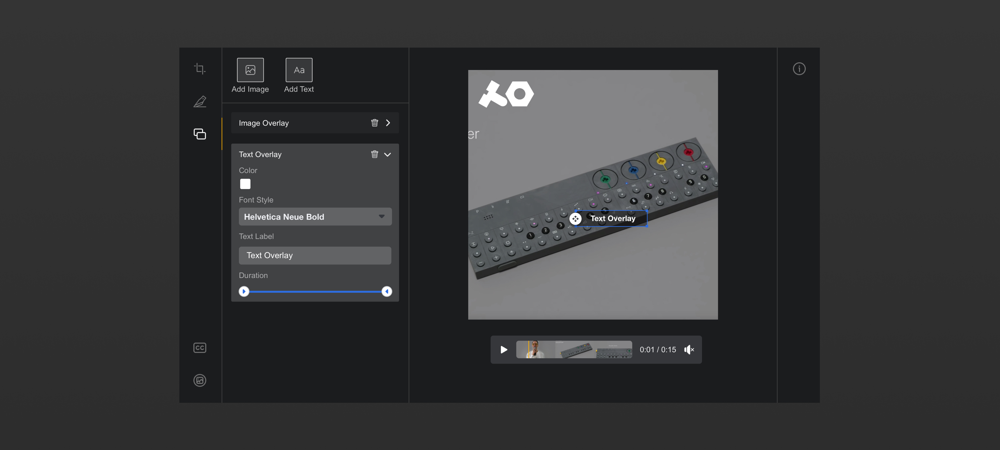
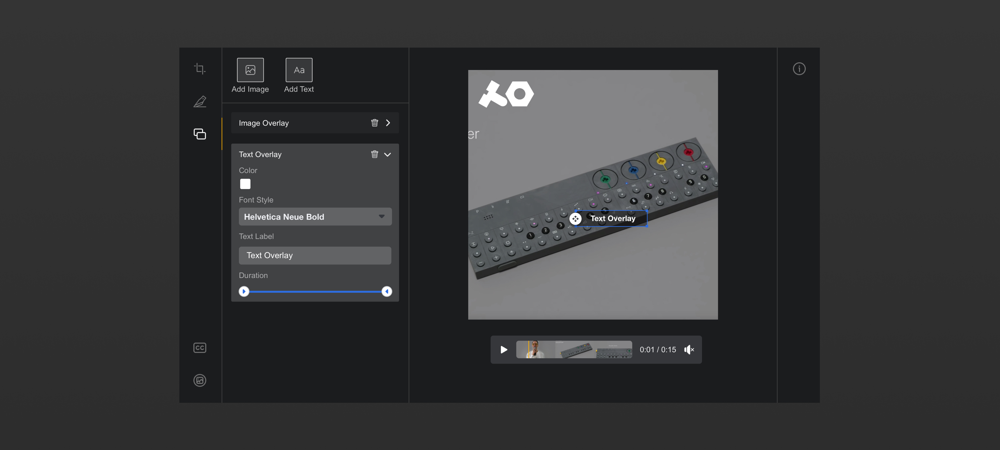

Product Design
In partnership with Marketplace, I shipped shopping experiences on NewsFeed and Stories that gave brands the power to reach their audiences and sell merch authentically on the Facebook platform. Product tagging on Facebook media allowed brands to continue posting high quality content without having to worry about commerciality when wanting to generate value down-funnel.
Product Design
As a designer on the Public Connections team, I shipped products on the Facebook notifications tab for brands and public figures with more than 10K followers.
Product Design
As a designer on the video ads pillar at Facebook, I created, strategized, and designed video creation and video editing products to give small businesses the same video advertising opportunity as large companies. By leveling the field for small businesses who don't have the time or resources to create high quality video ads, our team was responsible for building key projects from the ground up which contributed to ~$1M/day in revenue.
 
